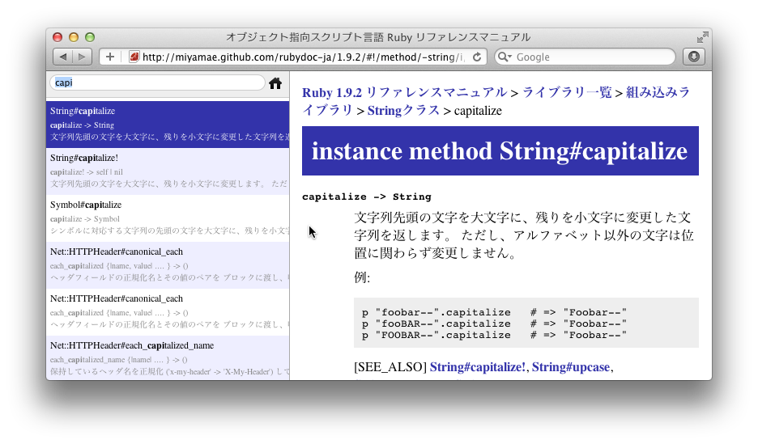

るりまプロジェクトの成果物であるRuby日本語リファレンスマニュアルのビューアです。高速な検索とキーボード操作で目的の項目を素早く見つけることができます。
すぐに利用できるWeb版と、オフラインで利用できるMac版を公開しています。
Browse online
Download for Mac

キーボード操作
- [↓]
- 次の項目を選択
- [↑]
- 前の項目を選択
- [Enter]
- 選択された項目を開く
Fork me on GitHub
≫ https://github.com/miyamae/rubydoc-ja
静的なファイルだけで構成されているので、ダウンロードしてローカルで利用することもできます。
作ってる人＝みやまえ
- Web(blog)
- http://bitarts.jp
- @miyamae